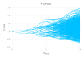

Usage
Installation
InvariantStopping can be installed using the Julia package manager. From the Julia REPL, type ] to enter the Pkg REPL mode and run
pkg> add InvariantStoppingor with using Pkg; Pkg.add("InvariantStopping").
Usage example
First, we load InvariantStopping (if we haven't already done so):
julia> using InvariantStoppingIn order to generate samples, we must first specify an initial state, a schedule and an underlying model.
julia> initial_state = State(0.0,1.0) # (x coord, y coord)
julia> schedule = Schedule(LinRange(0.0, 10, 20))
julia> underlying_model = BrownianMotion();
julia> sample = Sample(state, schedule, underlying_model)TODO: Attach image of plot(sample)
Here the schedule correponds to a simple path generated at deterministic times. We can specify more sophisticated schedule. For instance
function predicate_1(x,y)
return x - 2.0*y > 1.0
end
function predicate_2(x,y)
return x + 1.0 > 0.5
end
julia> stopping_time_1 = HittingTime(predicate_1, LinRange(0.0,10,20))
julia> stopping_time_2 = HittingTime(predicate_2, LinRange(0.0,10,20))
julia> schedule = Schedule(stopping_time_1, [Schedule(stopping_time_2)for _ in 1:10])
julia> sample = Sample(state,schedule, underlying_model)TODO: Attach imageo of plot(sample)
API
InvariantStopping.Utils.get_history — Methodget_historyInvariantStopping.Utils.get_leaf — Methodget_leafPlotting
InvariantStopping.Plot.plot — Methodplot(::Sample)1D : Plot a sample with the x-axis representing time and the y-axis representing the first coordinate.
Examples:
state = State(0.0,(1.0,))
binary_tree = Schedule(LinRange(0,10,11),2)
underlying_model = GeometricBrownianMotion(0.01,0.05,0.0)
sample = Sample(state, tree, underlying_model)
plot(sample)
state = State(0.0,(1.0,))
star = Star(LinRange(0,10,11),12)
underlying_model = GeometricBrownianMotion(0.01,0.05,0.0)
sample = Sample(state, star, underlying_model)
plot(sample)